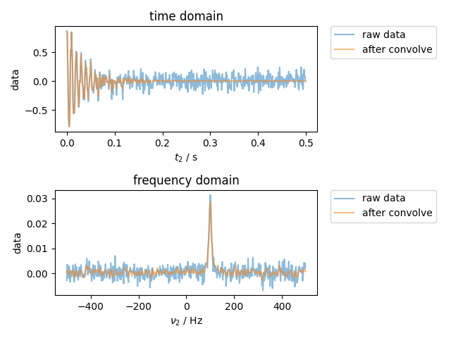

Note
Click here to download the full example code
Convolution¶
Demonstrate a convolution. In particular, the convolution wasn’t previously aware of the time axis, but now it is.
from pylab import *
from pyspecdata import *
fig, (ax_time, ax_freq) = subplots(2, 1)
t = nddata(r_[0:0.5:1e-3], "t2") # 1 kHz SW with a freq. resolution of 1/0.5=2 Hz
fake_data = exp(1j * 2 * pi * 100 * t - 10 * t * pi) # 10 Hz wide line at 100 Hz offset
fake_data.add_noise(0.1).set_units("t2", "s")
plot(fake_data, ax=ax_time, alpha=0.5, label="raw data")
ax_time.set_title("time domain")
ax_freq.set_title("frequency domain")
fake_data.ft("t2", shift=True)
assert fake_data.get_ft_prop("t2", "dt") == 1e-3
plot(fake_data, ax=ax_freq, alpha=0.5, label="raw data")
# note that the convolution is done in the
# frequency domain
fake_data.convolve("t2", 10 / 2.355)
plot(fake_data, ax=ax_freq, alpha=0.5, label="after convolve")
fake_data.ift("t2")
plot(fake_data, ax=ax_time, alpha=0.5, label="after convolve")
ax_time.legend(**dict(bbox_to_anchor=(1.05, 1), loc=2, borderaxespad=0.0))
ax_freq.legend(**dict(bbox_to_anchor=(1.05, 1), loc=2, borderaxespad=0.0))
fig.tight_layout()
show()
Total running time of the script: ( 0 minutes 0.106 seconds)